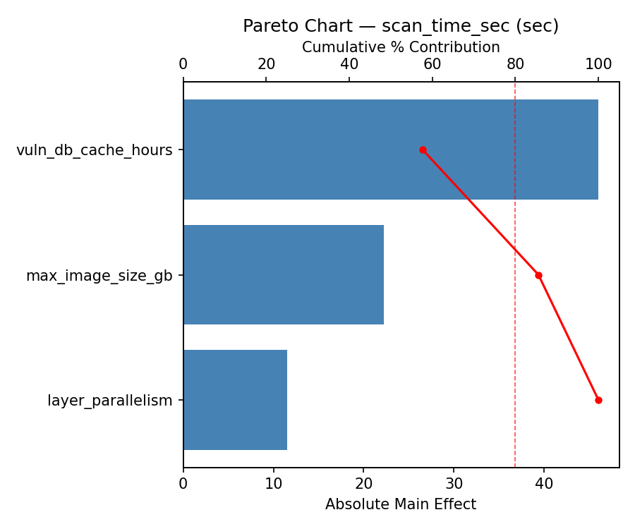
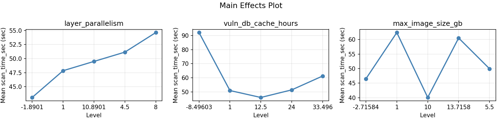
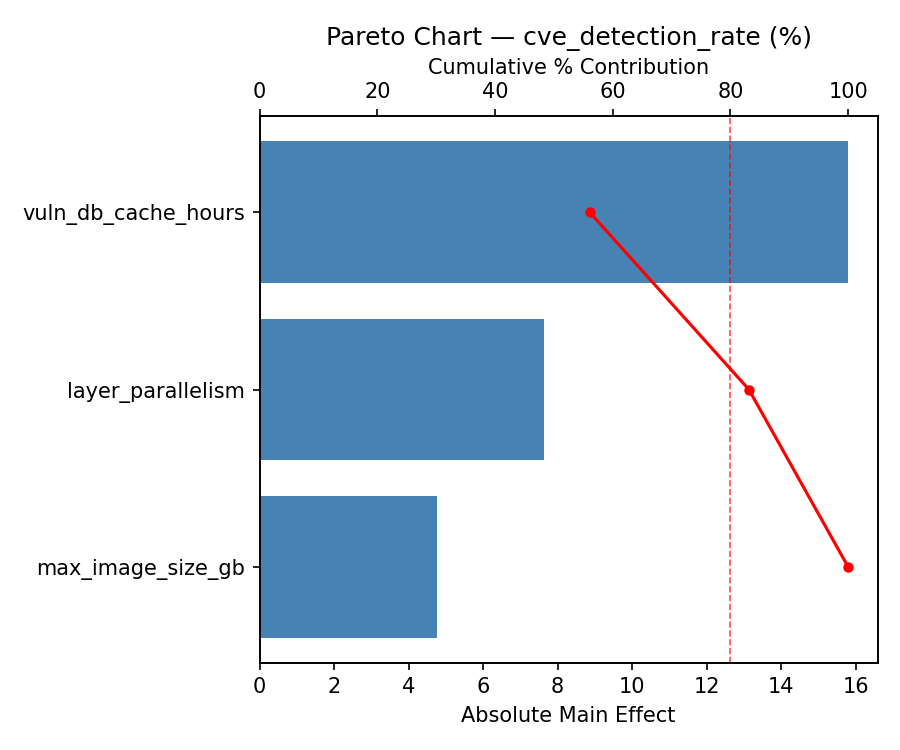
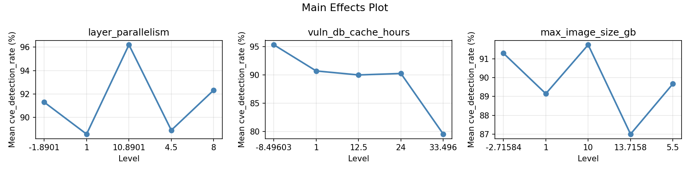
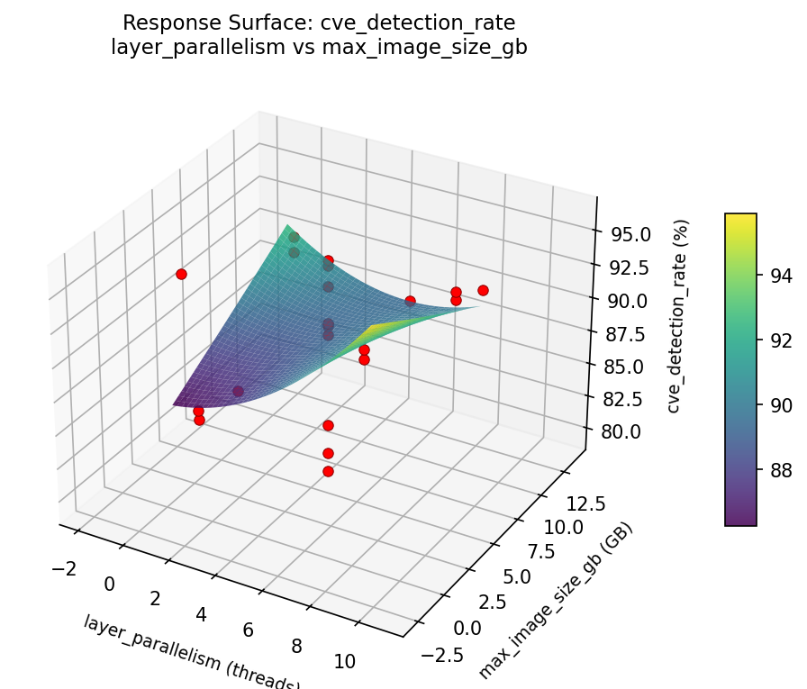
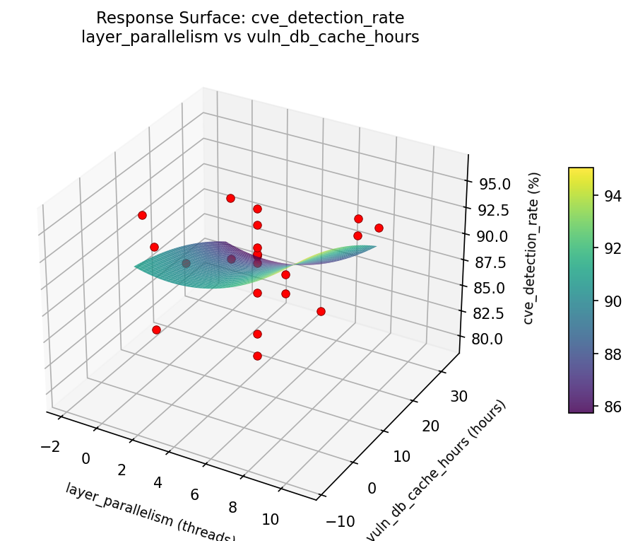
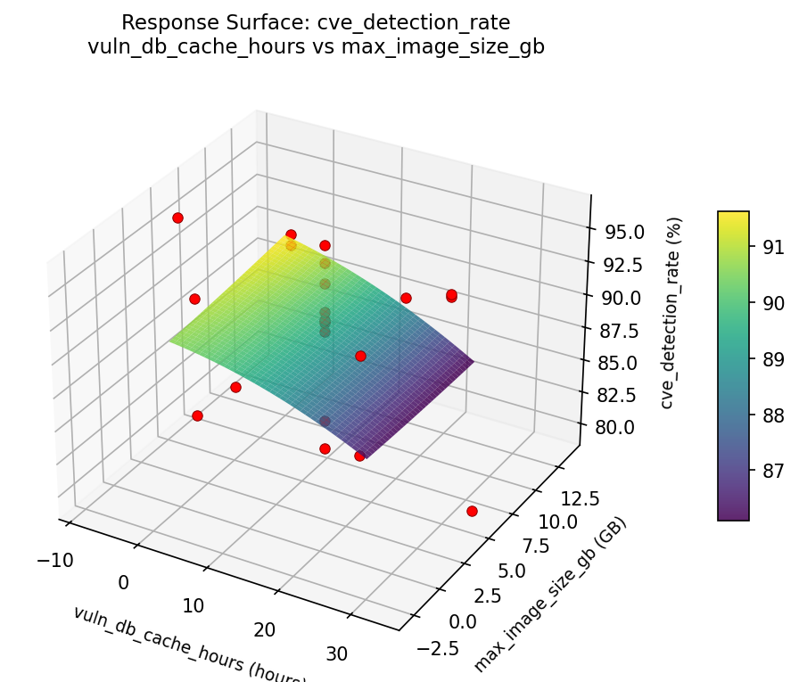
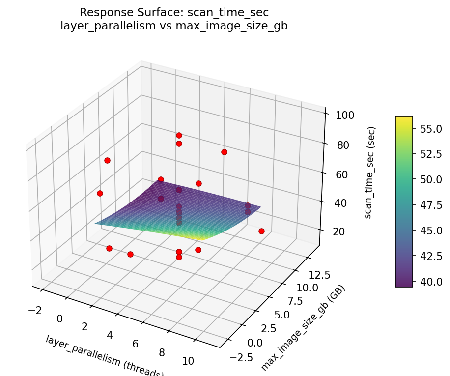
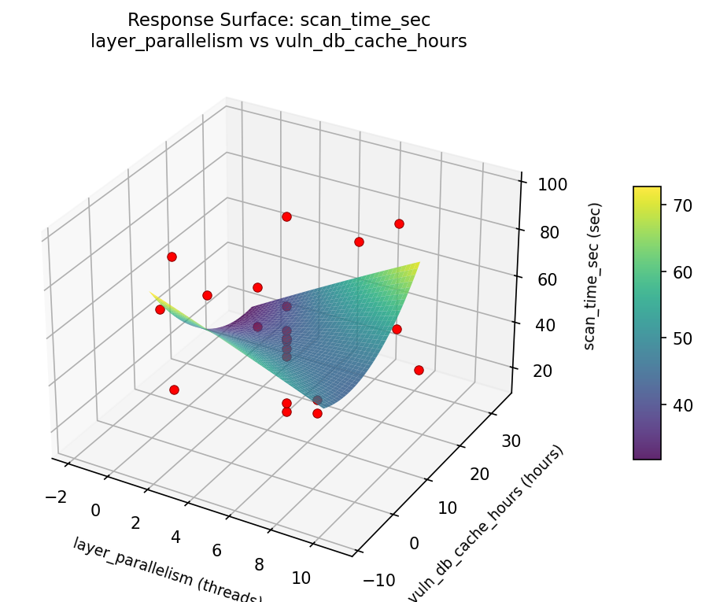
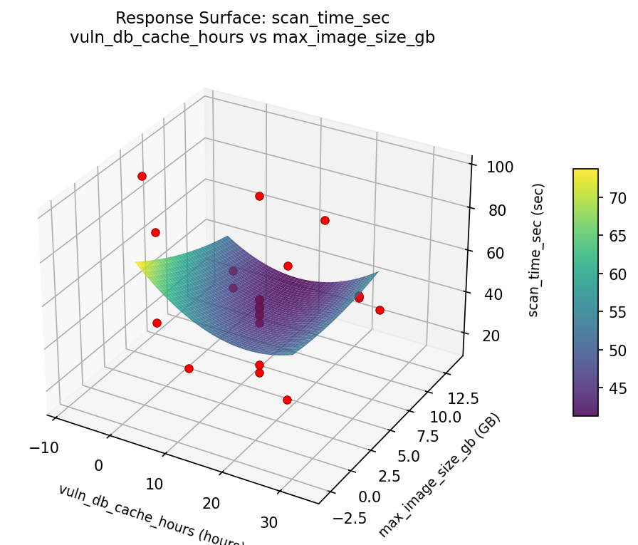

Summary
This experiment investigates container image scanning. Central Composite design to optimize layer parallelism, vuln DB cache, and max image size for scan time and CVE detection.
The design varies 3 factors: layer parallelism (threads), ranging from 1 to 8, vuln db cache hours (hours), ranging from 1 to 24, and max image size gb (GB), ranging from 1 to 10. The goal is to optimize 2 responses: scan time sec (sec) (minimize) and cve detection rate (%) (maximize). Fixed conditions held constant across all runs include scanner = trivy, registry = ecr.
A Central Composite Design (CCD) was selected to fit a full quadratic response surface model, including curvature and interaction effects. With 3 factors this produces 22 runs including center points and axial (star) points that extend beyond the factorial range.
Quadratic response surface models were fitted to capture potential curvature and factor interactions. The RSM contour plots below visualize how pairs of factors jointly affect each response.
Key Findings
For scan time sec, the most influential factors were vuln db cache hours (39.6%), layer parallelism (32.5%), max image size gb (27.8%). The best observed value was 14.7 (at layer parallelism = 4.5, vuln db cache hours = 12.5, max image size gb = 5.5).
For cve detection rate, the most influential factors were vuln db cache hours (41.9%), max image size gb (34.9%), layer parallelism (23.2%). The best observed value was 96.2 (at layer parallelism = 10.8901, vuln db cache hours = 12.5, max image size gb = 5.5).
Recommended Next Steps
- Run confirmation experiments at the predicted optimal settings to validate the model.
- Consider whether any fixed factors should be varied in a future study.
Experimental Setup
Factors
| Factor | Low | High | Unit |
|---|
layer_parallelism | 1 | 8 | threads |
vuln_db_cache_hours | 1 | 24 | hours |
max_image_size_gb | 1 | 10 | GB |
Fixed: scanner = trivy, registry = ecr
Responses
| Response | Direction | Unit |
|---|
scan_time_sec | ↓ minimize | sec |
cve_detection_rate | ↑ maximize | % |
Configuration
{
"metadata": {
"name": "Container Image Scanning",
"description": "Central Composite design to optimize layer parallelism, vuln DB cache, and max image size for scan time and CVE detection"
},
"factors": [
{
"name": "layer_parallelism",
"levels": [
"1",
"8"
],
"type": "continuous",
"unit": "threads"
},
{
"name": "vuln_db_cache_hours",
"levels": [
"1",
"24"
],
"type": "continuous",
"unit": "hours"
},
{
"name": "max_image_size_gb",
"levels": [
"1",
"10"
],
"type": "continuous",
"unit": "GB"
}
],
"fixed_factors": {
"scanner": "trivy",
"registry": "ecr"
},
"responses": [
{
"name": "scan_time_sec",
"optimize": "minimize",
"unit": "sec"
},
{
"name": "cve_detection_rate",
"optimize": "maximize",
"unit": "%"
}
],
"settings": {
"operation": "central_composite",
"test_script": "use_cases/66_container_image_scanning/sim.sh"
}
}
Experimental Matrix
The Central Composite Design produces 22 runs. Each row is one experiment with specific factor settings.
| Run | layer_parallelism | vuln_db_cache_hours | max_image_size_gb |
|---|
| 1 | 4.5 | 12.5 | 5.5 |
| 2 | 8 | 1 | 10 |
| 3 | 1 | 24 | 1 |
| 4 | 4.5 | 33.496 | 5.5 |
| 5 | 4.5 | 12.5 | 5.5 |
| 6 | -1.8901 | 12.5 | 5.5 |
| 7 | 4.5 | 12.5 | -2.71584 |
| 8 | 4.5 | 12.5 | 5.5 |
| 9 | 8 | 24 | 1 |
| 10 | 10.8901 | 12.5 | 5.5 |
| 11 | 4.5 | 12.5 | 5.5 |
| 12 | 4.5 | -8.49603 | 5.5 |
| 13 | 4.5 | 12.5 | 5.5 |
| 14 | 1 | 1 | 10 |
| 15 | 4.5 | 12.5 | 5.5 |
| 16 | 8 | 1 | 1 |
| 17 | 4.5 | 12.5 | 13.7158 |
| 18 | 8 | 24 | 10 |
| 19 | 4.5 | 12.5 | 5.5 |
| 20 | 1 | 1 | 1 |
| 21 | 1 | 24 | 10 |
| 22 | 4.5 | 12.5 | 5.5 |
Step-by-Step Workflow
1
Preview the design
$ python doe.py info --config use_cases/66_container_image_scanning/config.json
2
Generate the runner script
$ python doe.py generate --config use_cases/66_container_image_scanning/config.json \
--output use_cases/66_container_image_scanning/results/run.sh --seed 42
3
Execute the experiments
$ bash use_cases/66_container_image_scanning/results/run.sh
4
Analyze results
$ python doe.py analyze --config use_cases/66_container_image_scanning/config.json
5
Get optimization recommendations
$ python doe.py optimize --config use_cases/66_container_image_scanning/config.json
ℹ
Multi-Objective Optimization
This experiment has conflicting objectives (scan_time_sec (↓), cve_detection_rate (↑)). Use --multi to find the best compromise using desirability functions:
$ python doe.py optimize --config use_cases/66_container_image_scanning/config.json --multi
6
Generate the HTML report
$ python doe.py report --config use_cases/66_container_image_scanning/config.json \
--output use_cases/66_container_image_scanning/results/report.html
Features Exercised
| Feature | Value |
|---|
| Design type | central_composite |
| Factor types | continuous (all 3) |
| Arg style | double-dash |
| Responses | 2 (scan_time_sec ↓, cve_detection_rate ↑) |
| Total runs | 22 |
Analysis Results
Generated from actual experiment runs using the DOE Helper Tool.
Response: scan_time_sec
Top factors: vuln_db_cache_hours (39.6%), layer_parallelism (32.5%), max_image_size_gb (27.8%).
Pareto Chart

Main Effects Plot

Response: cve_detection_rate
Top factors: vuln_db_cache_hours (41.9%), max_image_size_gb (34.9%), layer_parallelism (23.2%).
Pareto Chart

Main Effects Plot

Response Surface Plots
3D surfaces fitted with quadratic RSM. Red dots are observed data points.
cve detection rate layer parallelism vs max image size gb

cve detection rate layer parallelism vs vuln db cache hours

cve detection rate vuln db cache hours vs max image size gb

scan time sec layer parallelism vs max image size gb

scan time sec layer parallelism vs vuln db cache hours

scan time sec vuln db cache hours vs max image size gb

Full Analysis Output
=== Main Effects: scan_time_sec ===
Factor Effect Std Error % Contribution
--------------------------------------------------------------
vuln_db_cache_hours 55.0750 4.8245 39.6%
layer_parallelism 45.2000 4.8245 32.5%
max_image_size_gb 38.6750 4.8245 27.8%
=== Summary Statistics: scan_time_sec ===
layer_parallelism:
Level N Mean Std Min Max
------------------------------------------------------------
-1.8901 1 46.5000 0.0000 46.5000 46.5000
1 4 55.7000 28.0921 38.7000 97.7000
10.8901 1 89.0000 0.0000 89.0000 89.0000
4.5 12 43.8000 20.1267 14.7000 87.4000
8 4 58.1000 22.7683 45.1000 92.1000
vuln_db_cache_hours:
Level N Mean Std Min Max
------------------------------------------------------------
-8.49603 1 46.5000 0.0000 46.5000 46.5000
1 4 69.7750 29.1041 44.2000 97.7000
12.5 12 49.9917 21.7258 18.4000 89.0000
24 4 44.0250 4.7233 38.7000 49.8000
33.496 1 14.7000 0.0000 14.7000 14.7000
max_image_size_gb:
Level N Mean Std Min Max
------------------------------------------------------------
-2.71584 1 27.6000 0.0000 27.6000 27.6000
1 4 56.7250 27.4909 38.7000 97.7000
10 4 57.0750 23.5705 42.2000 92.1000
13.7158 1 18.4000 0.0000 18.4000 18.4000
5.5 12 51.2583 21.1727 14.7000 89.0000
=== Main Effects: cve_detection_rate ===
Factor Effect Std Error % Contribution
--------------------------------------------------------------
vuln_db_cache_hours 6.2500 0.9740 41.9%
max_image_size_gb 5.2000 0.9740 34.9%
layer_parallelism 3.4500 0.9740 23.2%
=== Summary Statistics: cve_detection_rate ===
layer_parallelism:
Level N Mean Std Min Max
------------------------------------------------------------
-1.8901 1 90.6000 0.0000 90.6000 90.6000
1 4 89.3500 4.4852 83.0000 93.4000
10.8901 1 92.8000 0.0000 92.8000 92.8000
4.5 12 89.9250 4.8152 79.5000 96.2000
8 4 89.5250 6.1158 80.9000 95.3000
vuln_db_cache_hours:
Level N Mean Std Min Max
------------------------------------------------------------
-8.49603 1 91.3000 0.0000 91.3000 91.3000
1 4 90.2250 5.1732 83.0000 95.3000
12.5 12 89.6917 4.6365 79.5000 96.2000
24 4 88.6500 5.3966 80.9000 93.4000
33.496 1 94.9000 0.0000 94.9000 94.9000
max_image_size_gb:
Level N Mean Std Min Max
------------------------------------------------------------
-2.71584 1 85.5000 0.0000 85.5000 85.5000
1 4 88.6750 3.8396 83.0000 91.4000
10 4 90.2000 6.4224 80.9000 95.3000
13.7158 1 90.7000 0.0000 90.7000 90.7000
5.5 12 90.5250 4.6638 79.5000 96.2000
Optimization Recommendations
=== Optimization: scan_time_sec ===
Direction: minimize
Best observed run: #16
layer_parallelism = 4.5
vuln_db_cache_hours = 12.5
max_image_size_gb = 5.5
Value: 14.7
RSM Model (linear, R² = 0.1296, Adj R² = -0.0155):
Coefficients:
intercept +50.7409
layer_parallelism -1.7214
vuln_db_cache_hours +7.6984
max_image_size_gb +5.7262
RSM Model (quadratic, R² = 0.6863, Adj R² = 0.4510):
Coefficients:
intercept +34.7396
layer_parallelism -1.7214
vuln_db_cache_hours +7.6984
max_image_size_gb +5.7262
layer_parallelism*vuln_db_cache_hours -8.8375
layer_parallelism*max_image_size_gb -3.0625
vuln_db_cache_hours*max_image_size_gb +3.9125
layer_parallelism^2 +1.7356
vuln_db_cache_hours^2 +7.4206
max_image_size_gb^2 +14.8457
Curvature analysis:
max_image_size_gb coef=+14.8457 convex (has a minimum)
vuln_db_cache_hours coef=+7.4206 convex (has a minimum)
layer_parallelism coef=+1.7356 convex (has a minimum)
Notable interactions:
layer_parallelism*vuln_db_cache_hours coef=-8.8375 (antagonistic)
vuln_db_cache_hours*max_image_size_gb coef=+3.9125 (synergistic)
layer_parallelism*max_image_size_gb coef=-3.0625 (antagonistic)
Predicted optimum (from quadratic model):
layer_parallelism = 4.5
vuln_db_cache_hours = 12.5
max_image_size_gb = 13.7158
Predicted value: 94.6794
Model quality: Moderate fit — use predictions directionally, not precisely.
Factor importance:
1. max_image_size_gb (effect: 55.1, contribution: 50.9%)
2. vuln_db_cache_hours (effect: 47.0, contribution: 43.4%)
3. layer_parallelism (effect: 6.2, contribution: 5.7%)
=== Optimization: cve_detection_rate ===
Direction: maximize
Best observed run: #2
layer_parallelism = 10.8901
vuln_db_cache_hours = 12.5
max_image_size_gb = 5.5
Value: 96.2
RSM Model (linear, R² = 0.2388, Adj R² = 0.1119):
Coefficients:
intercept +89.9091
layer_parallelism +1.7273
vuln_db_cache_hours +0.4037
max_image_size_gb -1.9972
RSM Model (quadratic, R² = 0.3565, Adj R² = -0.1261):
Coefficients:
intercept +89.8038
layer_parallelism +1.7273
vuln_db_cache_hours +0.4037
max_image_size_gb -1.9972
layer_parallelism*vuln_db_cache_hours +1.0250
layer_parallelism*max_image_size_gb +0.9000
vuln_db_cache_hours*max_image_size_gb -0.3750
layer_parallelism^2 -0.3624
vuln_db_cache_hours^2 +1.0776
max_image_size_gb^2 -0.5574
Curvature analysis:
vuln_db_cache_hours coef=+1.0776 convex (has a minimum)
max_image_size_gb coef=-0.5574 concave (has a maximum)
layer_parallelism coef=-0.3624 concave (has a maximum)
Notable interactions:
layer_parallelism*vuln_db_cache_hours coef=+1.0250 (synergistic)
layer_parallelism*max_image_size_gb coef=+0.9000 (synergistic)
vuln_db_cache_hours*max_image_size_gb coef=-0.3750 (antagonistic)
Predicted optimum (from linear model):
layer_parallelism = 8
vuln_db_cache_hours = 24
max_image_size_gb = 1
Predicted value: 94.0373
Model quality: Weak fit — consider adding center points or using a different design.
Factor importance:
1. layer_parallelism (effect: 15.3, contribution: 49.2%)
2. max_image_size_gb (effect: 9.8, contribution: 31.5%)
3. vuln_db_cache_hours (effect: 6.0, contribution: 19.4%)